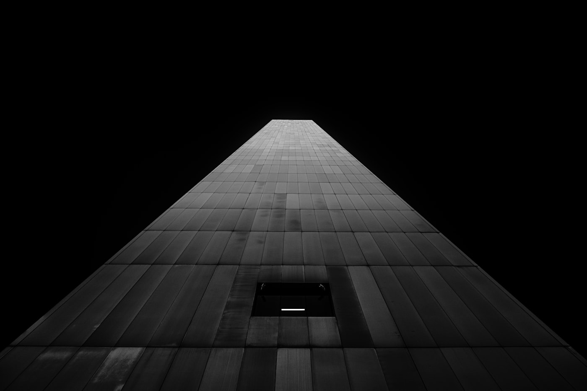
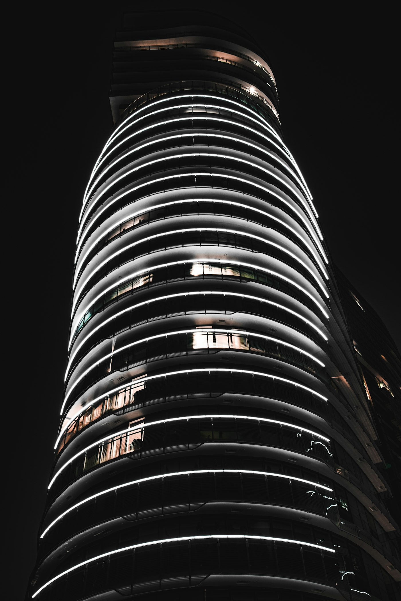
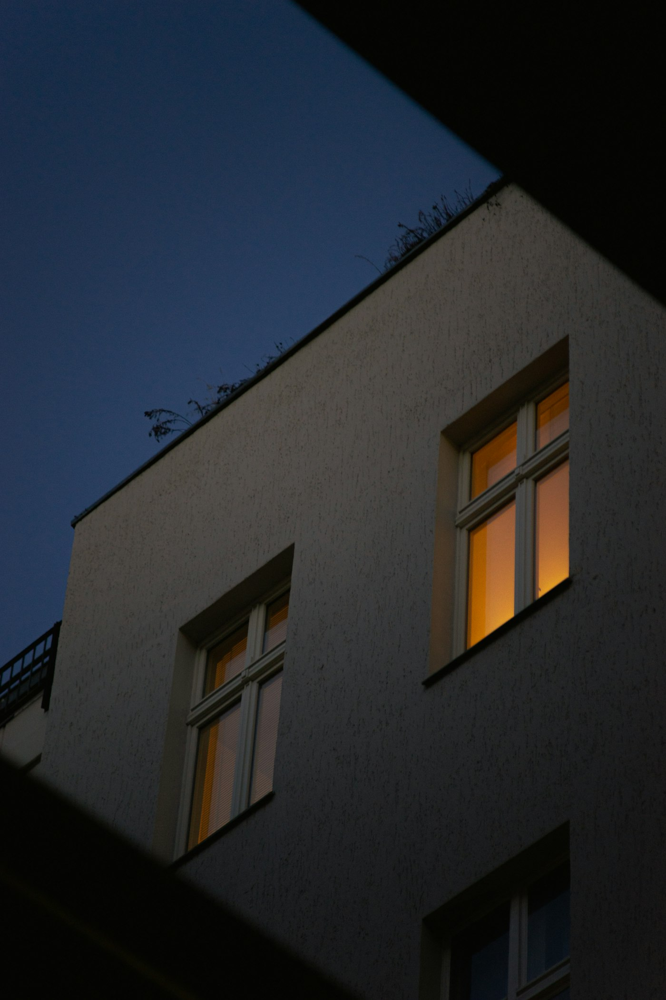
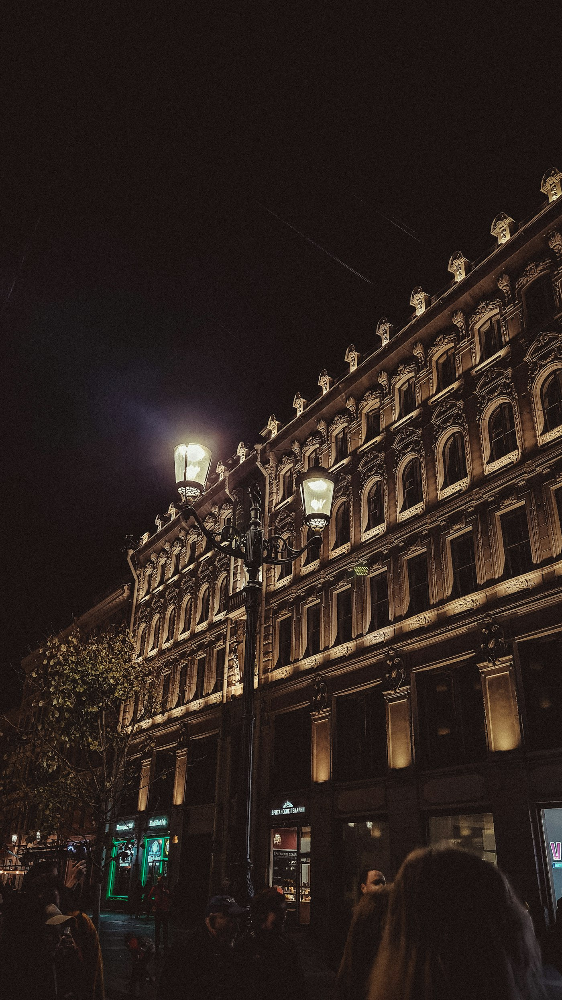
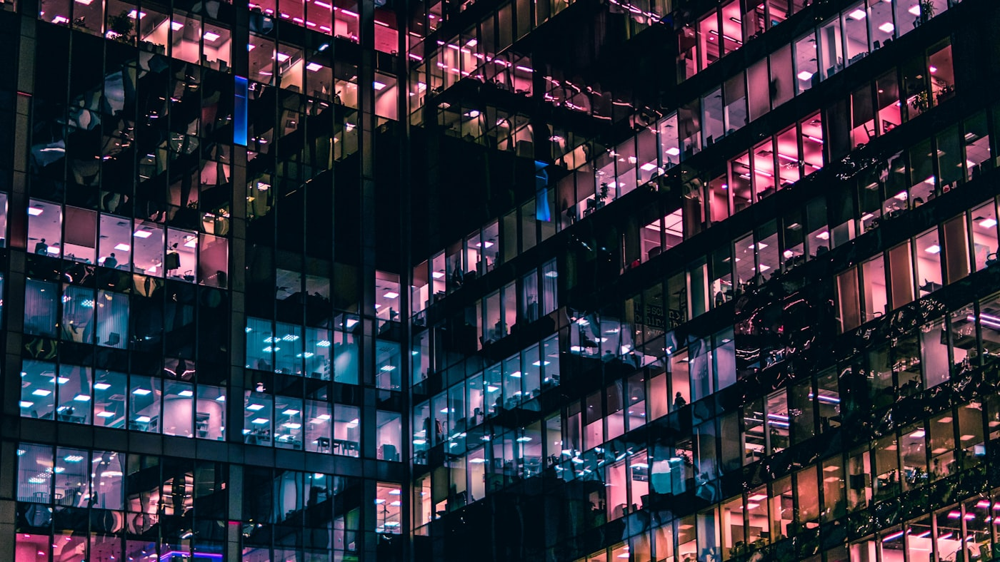
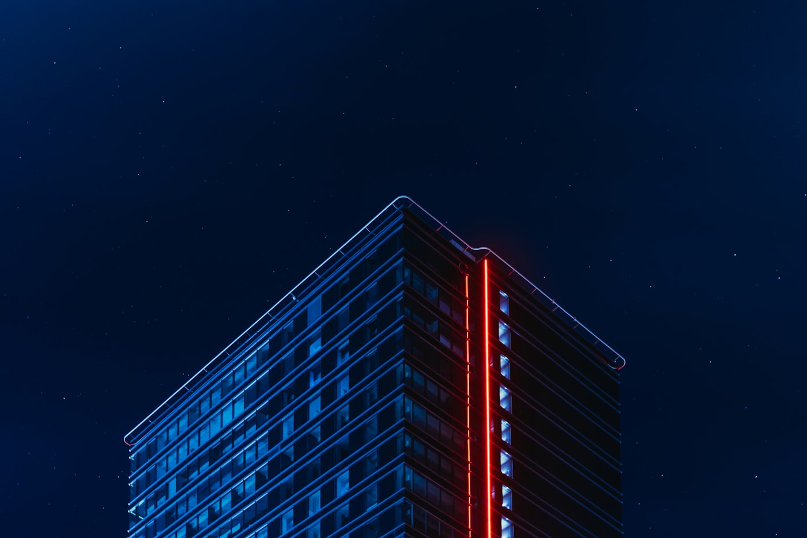
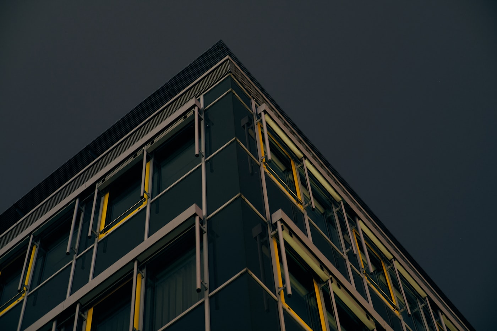
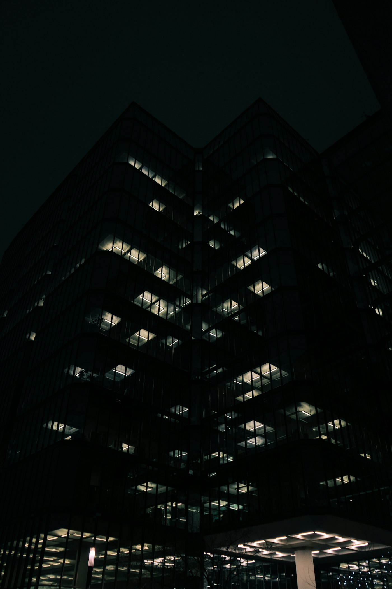
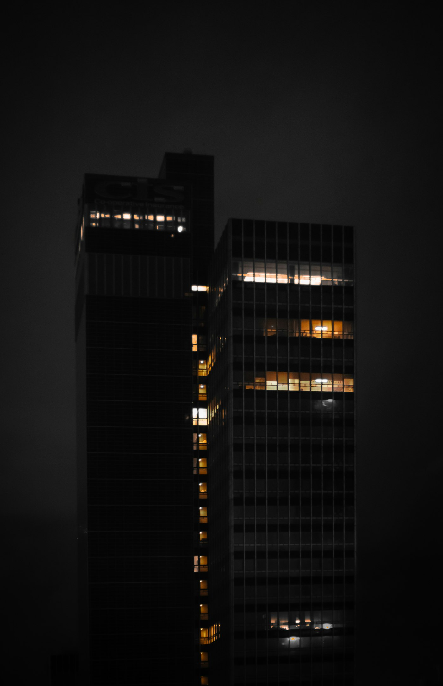

WALO · Lighting Design Studio
Lighting as architecture.
WALO · Madrid
↓ Explorar
01 — Selected work
Architectural lighting · 2022—2025









02 — Approach
We treat light as a building material — shaping how architecture is read at night.
WALO is a lighting design studio based in Madrid, working across Europe. We design the light that reveals structure, material and atmosphere — from the first concept to the last fixture on site.
- Architectural lighting
- Concept & masterplanning
- Technical design
- On-site commissioning
03 — Index
Selected · 07
- 01Museo — AmpliaciónCulturalMadrid2025
- 02Bodega RiberaIndustrialBurgos2024
- 03ConventoHeritageToledo2024
- 04Pabellón EXPOPublicLisboa2023
- 05Fundación MarsoCulturalBarcelona2023
- 06Torre NorteOfficeMadrid2022
- 07Capilla del AguaReligiousGirona2022
04 — The O as system
The same idea — the “O” as device — in two modes.
Sol · solid · daylight / Eclipse · aperture · night
One mark, two states. The circle that closes the name becomes a sun by day and an eclipse by night — the studio’s signal for light itself.
WAL
Lighting Design Studio
© 2026 WALO
Iluminamos arquitectura desde Madrid hacia Europa
V1